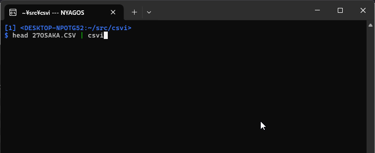

Csvi - ターミナル用 CSV エディタ


( <English> / <Japanese> )
Csvi は、UNIX系システムや Windows のターミナル上で動作する CSV エディタです。

主な特徴
-
保存時の差分が最小
編集していないセルは、元のテキストの表現（改行コード、二重引用符、BOM、エンコーディング、区切り文字など）を極力維持します。
そのため、本当に加えた変更だけが差分として現れます。実データを安全に編集したい場合に最適です。 -
vi風のカーソル移動、Emacs風のセル編集
h/j/k/lなどで移動、Ctrl系のキーで編集できます。
（v1.21.1 より、セル編集の中止はEscからCtrl-Gにかわりました） -
ファイル／標準入力の両方に対応
CSVファイルを直接開くだけでなく、パイプ経由のデータも読み込めます。 -
高速な起動とバックグラウンド読込
ファイルをすばやく開きつつ、読み込み処理は裏で進行します。 -
変更の視覚的な表示
編集したセルには下線が表示され、uキーで変更前の状態に戻せます。 -
元データの構文情報を表示
引用符の有無、区切り文字、文字コードなどの詳細を、画面最下行に表示します。 -
多様な文字コードのサポート
- UTF-8（デフォルト）
- UTF-16
- Windows の現在のコードページ（自動検出）
- IANA registry に登録された任意のエンコーディング（
-iana NAMEで指定）
-
配色設定
- 既定では黒背景向けの配色です。
-rvオプションで白背景向け配色に切り替えられます。- 環境変数
NO_COLORが定義されている場合はカラー表示を抑制します( https://no-color.org/ )
@emisjerry さんによる 紹介動画
Install
Manual Installation
Releases よりバイナリパッケージをダウンロードして、実行ファイルを展開してください
⚠️ Note: macOS用バイナリは実験的ビルドで、検証できていません。 もし何らかの問題を確認されましたらお知らせください！
eget インストーラーを使う場合 (クロスプラットフォーム)
brew install eget # Unix-like systems
# or
scoop install eget # Windows
cd (YOUR-BIN-DIRECTORY)
eget hymkor/csvi
scoop インストーラーを使う場合 (Windowsのみ)
scoop install https://raw.githubusercontent.com/hymkor/csvi/master/csvi.json
もしくは
scoop bucket add hymkor https://github.com/hymkor/scoop-bucket
scoop install csvi
"go install" を使う場合 (要Go言語開発環境)
go install github.com/hymkor/csvi/cmd/csvi@latest
go install は $HOME/go/bin もしくは $GOPATH/bin へ実行ファイルを導入するので、csvi を実行するにはそのディレクトリを $PATH に追加する必要があります。
Usage
$ csvi {options} FILENAME(...)
or
$ cat FILENAME | csvi {options}
※標準入力からデータを読み込んだ場合は w キーなどによる保存先のデフォルトは - (=標準出力) となります
Options
-help本ヘルプを表示-h intヘッダ行の行数-c列区切りにカンマを使う(拡張子が.csvの時のデフォルト動作)-t列区切りにタブを使う(拡張子が.csvでない時のデフォルト動作)-semicolon区切りにセミコロンを使う-iana string非UTF8テキストを読み書きする時の IANA名 を指定する-16beUTF-16BE と判断する-16leUTF-16LE と判断する-auto string自動処理 (テストコード用)-nonutf8UTF-8 と判断しない-w widthsセルの幅を設定 (例:-w 14,0:10,1:201列目は10桁,2列目は20桁,他は14桁とする)-fixcolセルの挿入削除を禁止する (i,aとdで始まるコマンドの幾つかを無効化)-pヘッダー行を保護する-readonly読み取り専用モード-rv反転表示を有効にする（文字色と背景色を反転）-ofs stringセル間の区切り文字-exteditor stringShift+Rで使用する外部エディター-o filename保存時に表示されるファイル名の初期値を指定する（標準入力から読み取った場合）-delimiter string区切り文字を指定する-versionバージョンを表示して終了する
改行コード
デフォルトでは、エディターは入力ファイルから改行コードを検出します。 入力データが与えられなかった場合、OS のデフォルト改行コードを使用しますが、 これらのオプションで変更可能です。
-lf新規追加行に対する改行コードとして LF(\n) を使用します-crlf新規追加行に対する改行コードとして CRLF(\r\n) を使用します
これらのオプションは排他で、同時に使用するとエラーになります。
キーバインド
- カーソル移動
h,←,Shift+TAB(左)j,Ctrl+N,↓,Enter(下)k,Ctrl+P,↑(上)l,→,TAB(右)<,gg(ファイル先頭)>,G(ファイル末尾)0,^,Ctrl+A(行頭)$,Ctrl+E(行末)PgUp,Ctrl+B(前のページへ)PgDn,Ctrl+F(次のページへ)
- 検索
/(キーワードを部分一致で前方検索)?(キーワードを部分一致で後方検索)n(次検索)N(逆検索)*(現在のセルの内容と完全一致する次のセルを検索)#(現在のセルの内容と完全一致する前のセルを検索)
- 編集
i(現在のセルの前に新セルを挿入)a(現在のセルの右に新セルを挿入)r,Meta+F2(現在のセルを内蔵readlineで編集)R(現在のセルを外部エディターで編集)x(現在のセルを空にする)dl,d+SPACE,d+TAB,dv(現在のセルを削除して右のセルで詰める)dd,dr(現在の行を削除する)dc,d|(現在の列を削除する)w(ファイルもしくは標準出力('-')に出力する)o(現在の行の後に新しい行を追加する)O(現在の行の前に新しい行を挿入する)I(現在の列の前に新しい列を挿入する)A(現在の列の後に新しい列を追加する)"(可能であれば、二重引用符の囲む/外す)u(現在のセルの元の値を復元する)yl,y+SPACE,y+TAB,yv(現在のセルを内部クリップボードへコピー)yy,yr,Y(現在の行を内部クリップボードへコピー)yc,y|(現在の列を内部クリップボードへコピー)p(現在のセル/列/行の直後に内部クリップボードの値をペースト)P(現在のセル/列/行の直前に内部クリップボードの値をペースト)Meta+p(現在のセル/列/行を内部クリップボードの値で上書き)s(ヘッダーより下の行を、現在の列の値で昇順にソート)S(ヘッダーより下の行を、現在の列の値で降順にソート)
- 表示設定
L(指定したエンコーディングでファイルを再読み込み)Ctrl+L(再表示)](カーソルのある列の幅を広げる)[(カーソルのある列の幅を縮める)=(カーソルのある列の幅を最も広いセルに合わせる)Meta+=(すべての列の幅を最も広いセルに合わせる)
- 終了:
qorMeta+q
MetaはAlt+keyもしくは、Esc の後にkeyを押下することを意味します。
環境変数
NO_COLOR
環境変数 NO_COLOR が 1 文字以上設定されている場合、Csvi の色付け出力を無効化します。これは NO_COLOR で提唱されている標準仕様に従った挙動です。
RUNEWIDTH_EASTASIAN
Unicode で「曖昧幅」とされる文字の表示桁数を明示的に指定します。
- 2桁幅にする場合：
set RUNEWIDTH_EASTASIAN=1 - 1桁幅にする場合：
set RUNEWIDTH_EASTASIAN=0（1以外の任意の1文字以上で可）
COLORFGBG
(FG);(BG) 形式で色が定義されている場合、前景色の値が背景色より小さいとき、白背景を前提とした配色（-rv オプション相当）を自動的に使用します。
なお、Csvi は通常、端末のデフォルト色を示すエスケープコード ESC[39m および ESC[49m を使用します。そのため、(FG);(BG) で指定された色そのものを直接採用するわけではありません。この設定は主に、灰色背景行の濃淡を白寄り・黒寄りのどちらにするかの判定に用いられます。
GOREADLINESKK
環境変数 GOREADLINESKK に辞書ファイルを指定すると、go-readline-skk を利用した内蔵 SKK かな漢字変換1が有効になります。
- Windows
set GOREADLINESKK=SYSTEMJISYOPATH1;SYSTEMJISYOPATH2...;user=USERJISYOPATH- 例:
set GOREADLINESKK=~/Share/Etc/SKK-JISYO.L;~/Share/Etc/SKK-JISYO.emoji;user=~/.go-skk-jisyo
- Linux
export GOREADLINESKK=SYSTEMJISYOPATH1:SYSTEMJISYOPATH2...:user=USERJISYOPATH
（注）~ は Windows の cmd.exe 上でもアプリ側で %USERPROFILE% に自動展開されます。
Use as a package
package main
import (
"fmt"
"os"
"strings"
"github.com/mattn/go-colorable"
"github.com/hymkor/csvi"
"github.com/hymkor/csvi/uncsv"
)
func main() {
source := `A,B,C,D
"A1","B1","C1","D1"
"A2","B2","C2","D2"`
cfg := &csvi.Config{
Mode: &uncsv.Mode{Comma: ','},
}
result, err := cfg.Edit(strings.NewReader(source), colorable.NewColorableStdout())
if err != nil {
fmt.Fprintln(os.Stderr, err.Error())
os.Exit(1)
}
// // env GOEXPERIMENT=rangefunc go run example
// for row := range result.Each {
// os.Stdout.Write(row.Rebuild(cfg.Mode))
// }
result.Each(func(row *uncsv.Row) bool {
os.Stdout.Write(row.Rebuild(cfg.Mode))
return true
})
}
Changelog
Contributing
- 不具合報告や改善提案は歓迎です。言語は英語もしくは日本語の一方のみで大丈夫です。
- コード中のコメント・コミットメッセージは英文でお願いします。
- プルリクエストについて、その時点で
developブランチがあるようであれば、そちらへお願いします。なければmasterで OK です。 - コードの修正に伴って必要になってくるテストコード・ドキュメント修正があると嬉しいですが、必須とはしません。適宜こちらでフォローします。
Acknowledgements
- sergeevabc (Aleksandr Sergeev)
- kevin-gwyrdh (Kevin)
- emisjerry (emisjerry)
- rinodrops (Rino)
- toolleeo
- wumfi
- presianbg (Presian Yankulov)
- gsmitheidw (Graham Smith)
- ikawaha (ikawaha)
- Dialga
Author
-
Simple Kana to Kanji conversion program. One of the Japanese input method editors. ↩︎